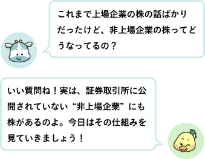
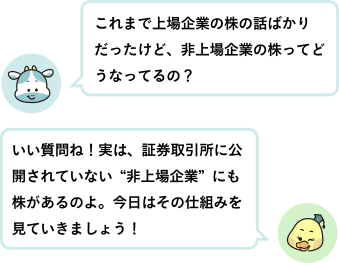
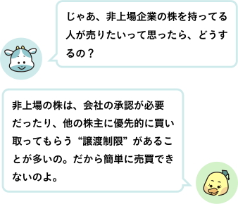

● 非上場企業って？
非上場企業は、株式を証券取引所で売買していない会社のことを言いましたね。
非上場企業の株は、普通の証券会社では簡単に買えないことから、株主は、社長や役員、創業メンバー、社員、親族、取引先などに限られることが多いです。

非上場企業の株は、普通の証券会社では簡単に買えないことから、株主は、社長や役員、創業メンバー、社員、親族、取引先などに限られることが多いです。
● 上場と非上場のちがい

● 非上場の株を買う理由
・経営に参加して、会社の方針に意見を出すため
・会社が利益を出したときに、配当をもらうため
・将来、会社が大きく成長したときに価値が上が るのを期待して
・家族経営の会社で、経営権を引き継ぐため
・知り合いや友人の会社を応援したいという目的で持つこともある
・会社が利益を出したときに、配当をもらうため
・将来、会社が大きく成長したときに価値が上が るのを期待して
・家族経営の会社で、経営権を引き継ぐため
・知り合いや友人の会社を応援したいという目的で持つこともある
● まとめ
・非上場企業にも株はあり、株主名簿で管理される
・上場企業と違って、証券取引所で自由に売買できない
・譲渡には会社の承認が必要なことが多い
・日本の企業のほとんどは非上場企業で、地域に根ざした投資先にもなる
・非上場企業にも株はあり、株主名簿で管理される
・上場企業と違って、証券取引所で自由に売買できない
・譲渡には会社の承認が必要なことが多い
・日本の企業のほとんどは非上場企業で、地域に根ざした投資先にもなる
次回は「海外企業の株を買ってみよう！」というお話。世界の有名企業に投資する仕組みや注意点をわかりやすく紹介します！